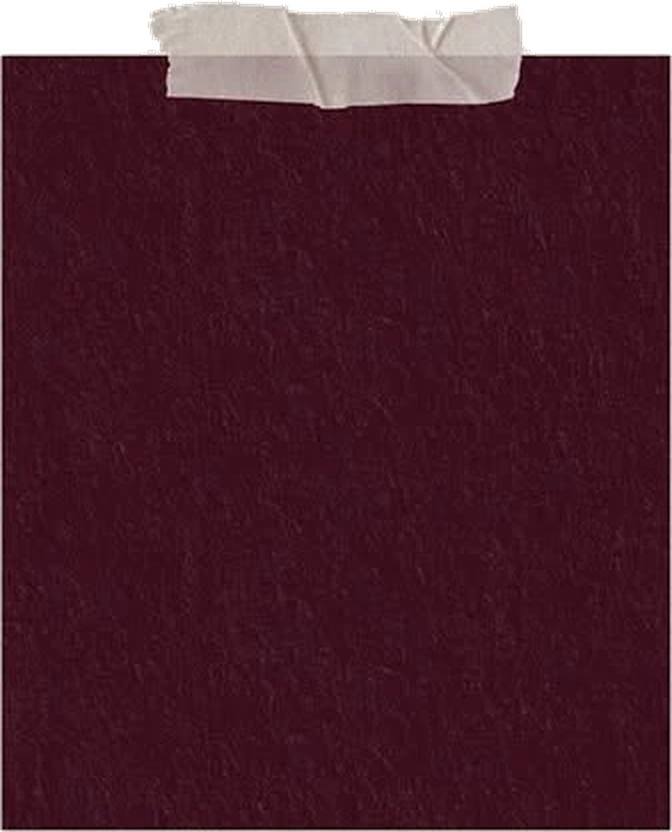
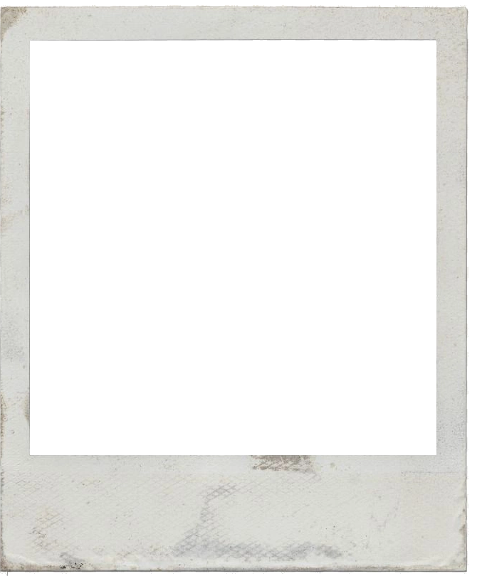
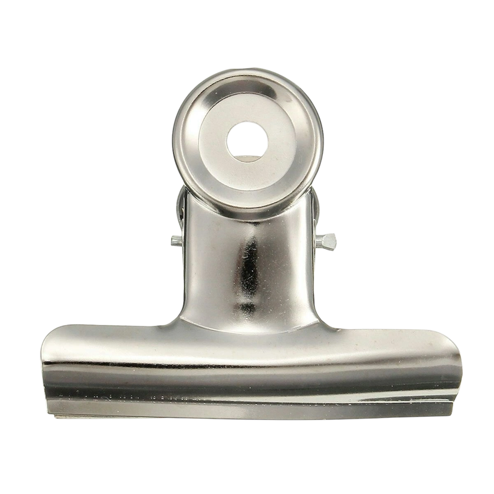

Sarah Khadder®
CS · San José State
Building at the intersection of product and AI.
BASEDSan José, CAGRADSpring 2027FOCUSPM · AI · Engineering


Projects
Section 03 · Click a swatch to open
Technical skills
Section 04